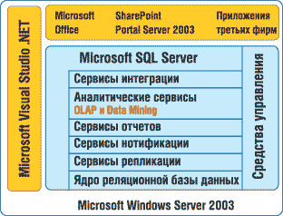
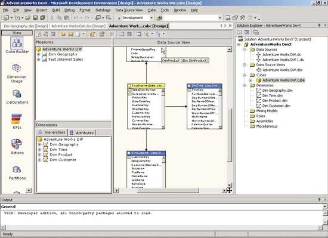
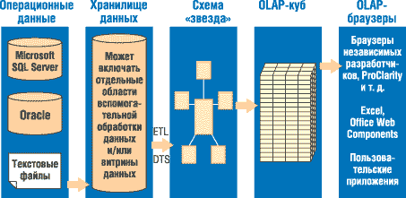

Не будем спорить о рейтингах поставщиков решений для бизнес-аналитики (пусть этим занимаются Gartner&Co), но вряд ли могут быть сомнения в том, что Microsoft (http://www.microsoft.com) входит в число лидеров этого рынка. Более того, хотя корпорация вошла в ведущую группу позднее других участников, можно уверенно констатировать, что роль ее неизменно возрастает. Это естественным образом вытекает из общего позиционирования Microsoft на мировом софтверном рынке и усиления ее влияния во всех его сегментах.
До начала нынешнего столетия наибольшую известность на рынке бизнес-аналитики (Business Intelligence, BI) имели клиентские офисные приложения Microsoft. Признанным лидером здесь остается Excel (многофункциональные электронные таблицы). В конце 90-х годов корпорация решила создать специализированный OLAP-клиент - Data Analyzer, но дальше первой версии его развитие, кажется, не пошло, и акцент в дальнейшем был сделан на том же Excel. В последние три-четыре года число клиентских BI-приложений от Microsoft пополнилось программами MapPoint (геоинформационная система) и Visio (визуализация структурированных данных).
Однако с появлением на рубеже веков новой версии Microsoft SQL Server 2000 корпорация приступила к формированию на базе этой СУБД собственных серверных BI-технологий корпоративного уровня. За четыре года после выпуска самой СУБД в ее составе появились службы Analysis Services (службы OLAP для создания предварительно построенных кубов для быстрого интерактивного анализа), Data Transformation Services (инструменты для извлечения, преобразования и загрузки данных между ОС и системами бизнес-аналитики), Accelerator for BI (система быстрой разработки для построения и развертывания аналитических приложений) и Reporting Services (управление отчетами).
Тут нужно отметить, что до недавнего времени ведущие игроки мирового BI-рынка основное внимание уделяли уровню средних и крупных заказчиков. Microsoft же, в соответствии со своей традиционной бизнес-моделью, строила стратегию вхождения на новый для себя рынок, делая ставку на два основных момента: во-первых, наращивая соответствующую функциональность своих существующих продуктов, уже имеющих достаточно сильные рыночные позиции; и во-вторых, расширяя потенциальный круг заказчиков за счет вовлечения, с одной стороны, малых организаций, а с другой - не только руководителей, принимающих решения, но менеджеров более низкого уровня.
В ноябре прошлого года корпорация выпустила Microsoft SQL Server 2005, в котором именно комплекс BI-средств назван одним из трех ключевых новшеств (наряду с развитием собственно ядра СУБД и средств разработки)*. Именно в данном пакете серверная платформа бизнес-аналитики от Microsoft приняла законченный вид комплексного решения масштаба предприятия.
* См. также "Microsoft выводит на орбиту VS 2005, SQL 2005 и BizTalk 2006", "BYTE/Россия" N 1'2006.
Рынок бизнес-аналитики развиваетсяСегмент средств бизнес-аналитики (Business Intelligence, BI) один из самых быстрорастущих сегодня на рынке ПО для управления предприятием. Объяснение этому вполне очевидно. С одной стороны, в условиях растущей конкуренции повышаются требования к обоснованности и оперативности принимаемых решений. С другой - в ходе своей деятельности предприятия накапливают огромные объемы информации, которые содержат очень важные сведения для поиска путей повышения эффективности бизнеса, но "добыть" эти данные без механизмов интеллектуального анализа просто невозможно. До конца прошлого века рынок BI-средств формировали в основном специализированные компании - Business Objects, Cognos, Hyperion, SAS и ряд других, которые делали акцент на собственно инструменты обработки данных. Однако классическим признаком "взросления" рынка считается момент, когда на него выходят поставщики платформенного ПО, которые начинают пополнять свои базовые решения дополнительными инструментами. Именно этот процесс начался на рубеже столетий, когда собственные BI-комплексы вокруг своих базовых СУБД и хранилищ данных начали формировать Oracle, IBM, SAP, Microsoft. Такая конкуренция между поставщиками специализированного и платформенного ПО - очень характерный и интересный процесс. Сначала всегда создается впечатление, что первые не смогут выдержать напора гигантов рынка, но потом, после определенной перегруппировки (в том числе консолидации, слияния ряда игроков), оказывается, что бизнес вертикальных разработчиков продолжает успешно развиваться. Объясняется это достаточно просто: ведь выход производителей базового ПО в специализированные сегменты означает не только усиление конкуренции, но и быстрое расширение самих этих рынков, рост числа пользователей, повышение спроса на новые, более эффективные технологии и т. п. Правда, такое расширение сопровождается определенными изменениями правил игры на нем, и для успешного развития бизнеса разработчикам нужно внимательно следить за этим… Тут нужно отметить, что показателем зрелости российского рынка можно считать повышение активности на нем местных разработчиков, которые всегда находят свои ниши в конкуренции с западными поставщиками. При этом здесь мы видим те же процессы, что и в мире. Так, имеется группа компаний, которые сосредоточены на собственно BI-решениях. В качестве примера можно привести Intersoft Lab (http://www.iso.ru), которая уже давно занимается технологиями создания хранилищ данных и OLAP-обработки, и BaseGroup Lab (http://www.basegroup.ru), делающую акцент на интеллектуальные методы анализа информации. Симптоматично и то, что серьезным расширением аналитических средств для своей платформы управления предприятием занялась в последнее время и фирма "1С". |
Интегрированная платформа управления данными
Microsoft SQL Server 2005 представляет собой высокопроизводительную масштабируемую многофункциональную платформу для обработки информации и создания приложений, имеющих дело с интеллектуальными ресурсами предприятия. Платформа построена вокруг ядра, обеспечивающего работу реляционной базы данных, и включает большое число сервисов. В целом система тесно интегрирована со всем комплексом ПО Microsoft (рис. 1), а сама СУБД и ряд ее сервисов, в свою очередь, представляют собой ключевые компоненты, обеспечивающие работу многих продуктов Microsoft.
|  |
| Рис. 1. Платформа управления данными SQL Server 2005.
|
В SQL Server 2005 входят следующие основные компоненты.
Реляционная база данных (Relation Database): безопасное, надежное, масштабируемое, высокодоступное ядро с улучшенной производительностью. Позволяет работать как со структурированными, так и с неструктурированными (XML) данными, обеспечивает поддержку .NET CLR (создание хранимых процедур, функций и триггеров на управляемом коде) и ADO.
Сервисы репликаций (Replication Services): репликация данных для распределенных и мобильных приложений обработки данных, высокая доступность систем, масштабируемый параллелизм со вторичными хранилищами данных для отчетных решений предприятия и интеграция с разнородными системами, включая существующие базы данных Oracle.
Сервисы нотификаций (Notification Services): развитые возможности уведомлений для разработки и внедрения масштабируемых приложений, способных доставлять персонализированные, своевременные обновления информации множеству соединенных и мобильных устройств.
Сервисы интеграции (Integration Services): извлечение, преобразование и загрузка для хранилищ данных и интеграции данных в масштабе предприятия.
Аналитические сервисы (Analysis Services): аналитическая обработка в реальном времени (OLAP) для быстрого сложного анализа больших и смешанных наборов данных, использующая многомерное хранение, а также решение задач Data Mining.
Сервисы отчетов (Reporting Services): исчерпывающее решение для создания, управления и доставки как традиционных бумажных отчетов, так и интерактивных, основанных на технологии WWW.
Инструменты управления: средства развитого управления и настройки баз данных, а также тесная интеграция с такими инструментами, как Microsoft Operations Manager (MOM) и Microsoft Systems Management Server (SMS). Стандартные протоколы доступа к данным существенно уменьшают время, необходимое для интеграции данных SQL Server с существующими системами. Кроме того, встроена поддержка Web-сервисов для взаимодействия с другими приложениями и платформами.
Инструменты разработки: SQL Server предлагает интегрированные инструменты разработки для ядра базы данных, извлечения, трансформации и загрузки данных, OLAP и отчетности, которые тесно интегрированы с Microsoft Visual Studio, предоставляя сквозные возможности разработки приложений. Каждая главная подсистема SQL Server поставляется со своей собственной объектной моделью и набором API для расширения системы данных в любом направлении, которое требуется конкретному бизнесу.
Средства бизнес-аналитики
Комплекс средств интеллектуальной обработки данных - Integration Services, Analysis Services OLAP, Analysis Services Data Mining и Reporting Services - в SQL Server 2005 значительно улучшен по сравнению с версией 2000. Кроме того, в SQL Server 2005 появились два новых компонента: SQL Server Management Studio и SQL Server Business Intelligence Development Studio, которые на ранних этапах бета-тестирования были известны под названиями SQL Server Workbench и BI Workbench (табл. 1).
Таблица 1. Основные элементы системы интеллектуальной обработки данных и связанные с ними компоненты Microsoft SQL Server 2000 и SQL Server 2005 BI-компонент SQL Server 2000 SQL Server 2005
| BI-компонент | SQL Server 2000 | SQL Server 2005 |
| Извлечение, преобразование и загрузка данных (ETL - Extract, Transformation, and Load) | Data Transformation Services (DTS) | SQL Server 2005 Integration Services |
| Реляционное хранилище данных | Реляционная база данных SQL Server 2000 | Реляционная база данных SQL Server 2005 |
| Многомерная база данных | SQL Server 2000 Analysis Services | SQL Server 2005 Analysis Services |
| Извлечение данных (Data Mining) | SQL Server 2000 Analysis Services | SQL Server 2005 Analysis Services |
| Управляемая система отчетности | SQL Server 2000 Reporting Services | SQL Server 2005 Reporting Services |
| Система пользовательских отчетов | SQL Server 2005 Reporting Services | |
| Пользовательские запросы и анализ | Продукты Microsoft Office (Excel, Office Web Components, Data Analyzer, SharePoint Portal) | Продукты Microsoft Office (Excel, Office Web Components, Data Analyzer, SharePoint Portal) |
| Инструменты разработки баз данных | SQL Server 2000 Enterprise Manager, Analysis Manager, Query Analyzer и т. д. | SQL Server 2005 Business Intelligence Development Studio (новый инструмент) |
| Инструменты управления базами данных | Enterprise Manager, Analysis Manager | SQL Server Management Studio (новый инструмент) |
Для решения задач BI в SQL Server 2000 служили несколько автономных инструментов, имевших непохожие пользовательские интерфейсы и не полностью соответствовавших современным стандартам разработки ПО. Поэтому в версии 2005 их заменили два новых инструмента на базе интегрированной среды Visual Studio 2005 IDE.
Пакету BI Development Studio (рис. 2) отводится основная роль в создании BI-решений, он полностью реализует функциональность Analysis Manager 2000, добавляя к ней возможности загрузки и преобразования информации, управления отчетами и извлечения знаний (табл. 2). В его среде можно формировать и другие проекты Visual Studio (с использованием Visual C#, Visual Basic NET и т. д.), что позволит разработчикам создавать действительно сквозные приложения.
|  |
| Рис. 2. Управление аналитическими службами в среде SQL Server 2005 Business Intelligence Development Studio.
|
Визуальный инструмент управления базами данных SQL Server Management Studio соединил в себе функциональность Enterprise Manager, Query Analyzer, Analysis Manager и некоторых средств администрирования, имевшихся в версии 2000, добавляя к ним новые возможности Reporting Services, Notification Services, XML и SQL Server 2005 Mobile Edition. Повышение производительности, масштабируемости и доступности достигнуто с помощью новых технологий, таких, как Snapshot Isolation, Database Mirroring, Database Snapshots, Service Broker. Для хранения конфиденциальной информации применяются средства шифрования баз данных.
Нужно сказать, что все основные компоненты BI-платформы Microsoft появились в том или ином виде еще в составе SQL Server 2000. Хронологически последним из них стал набор служб управления отчетами - это произошло в начале 2004 г. Фактически уже тогда он создавался с прицелом на версию SQL Server 2005 и поэтому в целом претерпел в новом варианте наименьшие изменения (описание версии 2000 - см. статью "Средства создания отчетов Microsoft", "BYTE/Россия" N 3'2004): в основном это более развитая интеграция с другими BI-службами, расширение возможностей пользователей, повышение интерактивности. Кроме того, нужно подчеркнуть, что Reporting Services имеют более высокий уровень автономности по сравнению с другими компонентами СУБД, эти службы могут работать с данными из разных источников, включая интерфейсы ODBC и OLE DB; таким образом, они оказываются совместимы с практически любой ИТ-архитектурой и могут бесшовно встраиваться в приложения. Именно поэтому Microsoft SQL Server Reporting Services часто распространяется и применяется как отдельный продукт.
Таблица 2. Возможности SQL Server 2005 Business Intelligence Development Studio в сравнении с Analysis Manager 2000
| Характеристика | Analysis Manager 2000 | BI Development Studio |
| Хранение метаданных | Базы данных Access или SQL Server | XML-файлы, обеспечивающие более высокий уровень управления структурой метаданных |
| Реализация BI-приложения | База данных, включающая определения связей, кубы, модели извлечения данных и роли. Для развертывания используются CAB-файлы | Решение (solution) в стиле приложений, создаваемых Visual Studio. Включает один или несколько проектов, один из которых имеет тип Analysis Services - аналогичный database в AM 2000. Другие типы проектов представляют функции DTS и Reporting Services |
| Автоматизация операций | Доля ручных операций довольно высока | Использование технологии IntelliCube автоматизирует процедуры создания кубов. Для ручного управления используется Cube Editor |
| Построение кубов | Кубы строятся на базе отдельной таблицы, которая находится в центре схемы "звезда" или "снежинка" | Можно использовать несколько таблиц, имеющих различные размерности. Такой режим в AM 2000 можно было реализовать с помощью виртуальных кубов, но в новой версии он более "бесшовный |
Сервисы интеграции
Компонент SQL Server 2005 Integration Services (SSIS), хотя и выступает преемником DTS (Data Transformation Services) в SQL Server 2000, все же вполне может считаться нововведением. Integration Services был полностью переработан по сравнению с DTS, чтобы стать реальной ETL-платформой (Extract, Transformation, and Loading - извлечение, преобразование и загрузка данных) предприятия.
Архитектура Integration Services совмещает в себе ориентированный на операции механизм потока задач (task-flow) с масштабируемым и производительным механизмом потока данных (data-flow). Такое сочетание потоков задач и потоков данных позволяет эффективно применять Integration Services и в проектах с традиционными системами ETL, и в проектах создания хранилищ данных, а также в более сложных, например, в проектах центров данных.
Ядро Integration Services - конвейер преобразования данных, использующий буферную архитектуру, которая обеспечивает большую производительность при манипуляции наборами данных за счет загрузки их в память. Такой подход позволяет выполнять все шаги преобразования данных в ETL-системах как одну операцию, т. е. без получения промежуточных результатов. В этом состоит существенное отличие Integration Services от традиционных средств ETL, которые часто создают промежуточные результаты почти на каждом шагу процесса заполнения хранилища или интеграции данных.
Возможность обрабатывать данные без создания промежуточных результатов выходит за рамки традиционных реляционных данных и данных из плоских файлов, а также традиционных методов преобразования в системах ETL. В Integration Services все типы данных (структурированные, неструктурированные, XML и т. д.) непосредственно перед загрузкой в буферы приводятся к табличному виду (т. е. состоящему из столбцов и строк). Все виды операций, которые применимы к табличному представлению данных, могут применяться к данным на любом шаге конвейера обработки данных. Это означает, что один конвейер обработки данных может объединять в себе множество различных источников данных и выполнять над этими данными сколь угодно сложные операции без создания промежуточных результатов. Если все же по соображениям бизнеса или оперативным причинам требуются промежуточные результаты, то Integration Services также позволяет это реализовать.
Архитектура конвейерной обработки данных позволяет службам интеграции одновременно принимать данные из множества источников, проводить над ними сложные множественные преобразования, а затем одновременно выгружать данные во множество приемников. За счет этого SSIS можно использовать для работы не только с большими наборами данных, но и для сложных потоков данных. На своем пути от источников к приемникам один поток данных можно разделить, соединить, смешать с другими потоками, выполнить еще какие-нибудь манипуляции.
Integration Services может извлекать (а также выгружать) данные из различных источников, включая OLE DB, управляемые источники (ADO.NET), ODBC, плоские файлы, файлы Excel и XML, с помощью специального набора компонентов, которые называются адаптерами (adapters). Можно также использовать для извлечения данных индивидуальные адаптеры (custom adapters), т. е. созданные самостоятельно или другими производителями для своих нужд.
Вдобавок к этим основным преобразованиям данных для хранилищ данных SSIS включает поддержку расширенных хранилищ, таких, как SCD (Slowly Changing Dimensions - редко обновляемые размерности). Мастер SCD поможет пользователям определить, какие измерения относятся к редко обновляемым, и на основе этой информации создаст полностью готовый поток данных с несколькими преобразованиями, реализующими загрузку медленно изменяющихся измерений. В дополнение к двум стандартным типам SCD (SCD Type 1 и SCD Type 2) предлагаются два новых типа - Fixed Attributes и Inferred Members (ФиксированныеПризнаки и ВыведенныеЭлементы).
Одна из ключевых особенностей Integration Services - способность интегрировать не только данные, но и методы обработки этих данных. Такой подход позволяет включить в него средства для очистки информации, основанные на нечеткой логике (fuzzy logic). Службы Integration Services глубоко интегрированы с технологиями добычи данных из Analysis Services. Поддержка комплексных методов передачи данных позволяет не только обнаружить аномальные данные, но и автоматически исправить их и заменить на лучшие значения.
Способность конвейера потока данных обрабатывать практически любой вид данных, глубокая интеграция с Analysis Services, возможность расширения за счет различных технологий преобразования данных, наличие мощного механизма процессов - все это позволяет применять Integration Services во многих проектах, которые традиционно не воспринимаются как ETL-задачи, например, для реализации систем с сервис-ориентированной архитектурой (SOA).
Аналитические сервисы
SQL Server 2005 Analysis Services (AS 2005) состоит из двух основных дополняющих друг друга функциональных частей - On-Line Analytical Processing (OLAP) и Data Mining.
Среди компонентов BI 2005 наибольшему обновлению по сравнению с версией 2000 подверглись OLAP-средства, что вполне естественно, так как другие средства были выпущены позднее. Ниже мы рассмотрим основные архитектурные изменения OLAP-механизмов (рис. 3).
|  |
| Рис. 3. Архитектура OLAP Analysis Services использует комбинацию различных технологий.
|
В OLAP 2000 работа с кубами базировалась исключительно на применении реляционных звездообразных схем в качестве источника данных. AS 2005 с помощью нового механизма Data Source View (DSV) может представлять структуру кубов в виде атрибутивных схем. Это повышает гибкость обработки данных, в том числе дает возможность отслеживать обратные связи между кубами и рабочими базами данных. В то же время DSV позволяет работать со структурами кубов без их непосредственного соединения с источниками данных.
OLAP 2005 использует новую технологию Unified Dimensional Model (UDM), которая представляет собой комбинированный механизм доступа к реляционным БД и многомерным OLAP-кубам. Ее применение снимает традиционное различие между организацией работы с OLAP-данными и стандартными отчетами. Среди новшеств UDM можно выделить следующие функции.
Управление размерностями на базе атрибутов. В OLAP 2000 можно было использовать только одну иерархическую структуру управления размерностями, что ограничивало, в частности, возможности анализа данных в различных разрезах. В OLAP 2005 модель размерностей может быть простым набором атрибутов, не обязательно связанных иерархическими связями. Это позволяет динамически создавать нужные комбинации данных. Например, размерность "Пользователь" может включать десятки демографических параметров, которые представляются в виде различных иерархий: например, Страна-Область-Город или Город-Возраст-Пол.
Сложные типы размерностей. В то время как в OLAP 2000 все размерности должны были быть структурированы в виде звездообразных или родительских схем, OLAP 2005 дополнительно поддерживает в качестве размерности такие типы, как роли, ссылки и множественные связи.
"Перспективы". Новые архитектурные возможности OLAP 2005 позволяют создавать кубы сложной структуры, навигация по ним становится трудной и не очень удобной. Эта проблема решается с помощью "перспектив" (Perspectives) - именованных групп размерностей и мер, которые позволяют создавать различные варианты представления одного и того же куба для разных категорий пользователей.
Группы мер. В OLAP 2005 несколько разнородных таблиц допустимо объединить в единый куб, с которым можно работать с помощью коллекций мер, в том числе совместно с перспективами.
OLAP 2000 поддерживает вычисление и кэширование как на сервере, так и на клиенте. Новая версия выполняет эти операции только на серверной стороне. Microsoft считает, что это упрощает задачи управления системой и ее интеграции с другими решениями. Кроме того, в AS 2005 включено несколько новых утилит для автоматизации операций конфигурирования и развертывания (при развертывании AS 2000 на различных аппаратных платформах требовалось ручное управление настройками источников данных и кубов).
Модель программирования AS 2005 также включает широкий набор новых и модернизированных функций. Существенно упрощена вычислительная модель, которая теперь позволяет применять MDX-скрипты (MultiDimentions eXpression). Помимо упрощения собственно программирования и улучшения контроля доступа к данным, это дает возможность пошаговой отладки, чего в предыдущих версиях не было. Результаты расчетов можно кэшировать для повышения скорости обработки последующих запросов.
В AS 2000 хранимые процедуры должны были быть оформлены в виде COM-классов, в новой версии они могут быть написаны на любом CLR-языке для выполнения в среде .NET Framework. Для таких обычных, но создающих немало проблем операций, как конвертация валют, преобразование единиц измерения и т. п., можно использовать BI-мастер и шаблоны вычисляемых мер. Программируемые BI-объекты допускается создавать с помощью технологий Analysis Management Objects.
При использовании AS 2000 разработчики почти не имели возможностей получать низкоуровневую информацию о событиях, происходящих на AS-сервере. AS 2005 проводит трассировку событий, и эти данные могут использоваться для мониторинга и анализа с помощью SQL Server Profiler.
Программирование пользовательского интерфейса AS 2005 выполняется с помощью специализированного языка разметки XML for Analysis. AS 2005 включает механизм перевода, который позволяет представлять один и тот же куб на разных национальных языках.
В Analysis Services 2005 существует также система ключевых показателей производительности (Key Performance Indicator, KPI), с помощью которой можно определить на сервере вычисления, необходимые для оценки эффективности бизнеса. Эти KPI могут выводиться в отчетах, порталах и электронных досках сообщений, с помощью API доступа к данным и инструментов Microsoft и сторонних производителей.
Извлечение данных
Microsoft SQL Server 2005 Data Mining - это технология интеллектуальной обработки данных, которая помогает создавать сложные аналитические модели и интегрировать их в бизнес-процессы (табл. 3). SQL Server 2005 поставляется с самыми популярными алгоритмами извлечения данных, состав которых может быть расширен за счет встраивания алгоритмов независимых разработчиков.
Алгоритм деревьев принятия решений от Microsoft (Microsoft Decision Trees) часто выступает в качестве начальной точки исследования данных. В основе своей это алгоритм классификации, и он хорошо работает для прогнозирования и дискретных, и непрерывных атрибутов. Когда алгоритм строит модель, он смотрит на то, как каждый входной атрибут в наборе данных влияет на результат прогнозируемого атрибута. Цель его - найти комбинацию входных атрибутов и их состояний, которая позволит прогнозировать значение прогнозируемого атрибута.
Алгоритм Naive Bayes от Microsoft быстро строит модели добычи данных, которые можно использовать для классификации и прогнозирования. Алгоритм рассчитывает вероятность, с которой каждое возможное состояние входного атрибута приводит к каждому состоянию прогнозируемого атрибута. Алгоритм поддерживает только дискретные (не непрерывные) атрибуты и считает, что все входные атрибуты влияют на прогнозируемый атрибут независимо друг от друга. Поскольку алгоритм Naive Bayes работает очень быстро, он популярен в фазе начального исследования данных для решения проблем как классификации, так и прогнозирования.
Алгоритм кластеризации от Microsoft (Microsoft Clustering) использует итеративный процесс для группировки строк из набора данных в кластеры, содержащие строки с одинаковыми характеристиками. Используя кластеры, можно исследовать данные для нахождения взаимосвязей. Можно также делать прогнозы на основе кластерной модели.
Алгоритм поиска ассоциаций от Microsoft (Microsoft Association) основан на алгоритме a priori и обеспечивает эффективный метод нахождения корреляций в больших наборах данных. В основном он используется для анализа набора приобретаемых товаров (market basket analysis). Алгоритм поиска ассоциаций двигается в цикле по транзакциям в базе данных для нахождения товаров, которые с наибольшей вероятностью появятся вместе в транзакции одного покупателя. Такие товары группируются в наборы товаров, и генерируются правила, которые потом можно использовать для прогнозирования. Любой реляционный или OLAP-анализ, который выполняет множество операций distinct counting, будет хорошим кандидатом для анализа ассоциаций. Алгоритм поиска ассоциаций от Microsoft чувствителен к выбору параметров алгоритма, поэтому для небольших задач алгоритм деревьев принятия решений может лучше подойти для анализа набора приобретаемых товаров.
Алгоритм последовательной кластеризации от Microsoft (Microsoft Sequence Clustering) сочетает в себе анализ последовательности операций с кластеризацией для исследования данных и прогнозирования. Модель последовательной кластеризации чувствительна к последовательности возникновения событий. Кроме того, алгоритм кластеризации учитывает другие атрибуты при группировке строк по кластерам, что дает возможность создать модель, в которой есть корреляция между последовательной и непоследовательной информацией. Алгоритм последовательной кластеризации используется для анализа маршрута перемещения пользователя по страницам при анализе трафика Web-сайта, для выяснения того, какие страницы сайта больше всего связаны с продажей определенного товара, и прогнозирования, какие следующие страницы сайта посетит пользователь.
Алгоритм временных рядов от Microsoft (Microsoft Time Series) создает модели, которые можно использовать для прогнозирования одной или нескольких постоянно изменяющихся переменных, таких, как цена акции. При прогнозировании алгоритм основывается исключительно на трендах, полученных из обучающих данных при создании модели. Алгоритм временных рядов использует методику AutoRegression Trees, очень прост в использовании и генерирует модели с высокой точностью прогнозирования. Существует целое направление статистического анализа, посвященное временным рядам. Большинство других продуктов для извлечения данных предоставляют множество методик, таких, как ARMA, ARIMA и Box-Jenkins, и статистик должен выбрать из них тот, который лучше всего соответствует модели. Компания Microsoft выбрала подход, который делает анализ временных рядов доступным широкой аудитории, с точными результатами.
Алгоритм нейронной сети от Microsoft (Microsoft Neural Net), как и алгоритмы деревьев принятия решений и Naive Bayes, в основном используется для исследования данных, классификации и прогнозирования. Алгоритм нейронной сети - это методика искусственного интеллекта, которая исследует все возможные взаимосвязи между данными. Из-за того, что этот алгоритм исследует данные тщательнее других, он оказывается самым медленным из трех алгоритмов классификации.
Таблица 3. Основные задачи бизнеса, решаемые методами извлечения данных
| Аналитическая задача | Примеры | Алгоритмы Microsoft |
| Классификация: назначение событий заранее определенным классам, таким, как "Хороший" или "Плохой" | Анализ кредитного риска Анализ "текучести клиентов (churn analysis) Удержание клиентов (customer retention) |
Деревья принятия решений Naive Bayes Нейронные сети |
| Сегментирование: разработка системы для группирования одинаковых событий | Анализ профиля покупателей Кампания почтовой рассылки |
Кластеризация Последовательная кластеризация |
| Ассоциирование: глубокий поиск корреляций | Анализ набора приобретаемых товаров (market basket analysis) Глубокое исследование данных |
Деревья принятия решений Ассоциативные правила |
| Прогнозирование временных рядов: прогнозирование будущего | Прогнозирование продаж Прогнозирование цен акций |
Временные ряды |
| Прогнозирование: прогнозирование значения для нового события (например, для нового покупателя) на основе значений для подобных событий (таких, как существующие покупатели) | Котировки страховых ставок Прогнозирование прибыли от покупателей Прогнозирование температуры |
Все алгоритмы |
| Анализ отклонений: определение того, как событие или сегмент отличается от других | Обнаружение мошенничества по кредитным картам Анализ несанкционированного подключения к сети |
Все алгоритмы |
Заключение
Microsoft SQL Server 2005 - это полноценная платформа интеллектуальной обработки данных, которая предоставляет инфраструктурные и серверные компоненты для создания:
- больших, сложных хранилищ данных, к которым легко выполнять запросы, и недорогих с точки зрения поддержки;
- небольших систем отчетности и анализа, простых в создании, которыми легко управлять на небольших предприятиях или в отделах больших предприятий;
- систем с небольшой задержкой обновления данных, которые доставляют аналитические данные оперативным пользователям;
- систем аналитики замкнутого цикла и систем добычи данных;
- встроенных систем, которые расширяют использование интеллектуальной обработки данных.
Все входящие в состав SQL Server инструменты - реляционная СУБД, Integration Services, Analysis Services, OLAP, Data Mining и Reporting Services - значительно улучшены. Такие новые инструменты, как Business Intelligence Development Studio и SQL Server Management Studio, расширяют платформу интеллектуальной обработки данных Microsoft.
Microsoft Office пополняется функциями бизнес-аналитикиВ начале сентября 2005 г. компания Microsoft объявила о внутренней реорганизации, в рамках которой, в частности, ранее автономные направления Information Worker (настольные приложения) и Microsoft Business Solutions (деловой софт) будут сведены в единое подразделение Microsoft Business Division. А спустя полтора месяца корпорация сообщила о важном шаге, нацеленном на технологическую интеграцию этих двух групп продуктов в рамках решения задач бизнес-аналитики (Business Intelligence, BI), актуальность которых для повышения эффективности управления предприятиями сегодня сложно переоценить. Свою серверную BI-платформу (OLAP-технологии, средства управления отчетами, загрузка и преобразование данных и т. п.) Microsoft строит на базе SQL Server в качестве универсального хранилища данных. Теперь же корпорация намерена существенно повысить роль в этом направлении и своих офисных продуктов, на которые возлагаются в основном задачи доставки необходимой бизнес-информации до конкретных рабочих мест. Именно эти функции станут одним из направлений развития новой версии офисного пакета, известного сегодня под кодовым именем Office 12. В настоящее время объявлены некоторые планы, касающиеся продуктов Office 12 Excel и Office 12 SharePoint, которым отводится главная роль в деле интеграции клиентских рабочих мест с SQL Server 2005. Приложение Excel уже давно стало одним из наиболее популярных OLAP-клиентов. Правда, несколько лет назад Microsoft сделала попытку создать другое специализированное приложение для этих целей (Data Analyzer), но сейчас, похоже, окончательно распрощалась с этой идеей, сделав ставку на один из самых массовых офисных продуктов. В Office 12 Excel будут усилены средства взаимодействия между электронными таблицами и внешними источниками данных, а также улучшены возможности детализированного анализа исходных данных. В числе его новых функций будут полная поддержка работы SQL Server 2005 Analysis Services (рис. 4), модернизированные средства сортировки и фильтрации информации, расширенный состав методов визуализации данных, а также более широкие возможности обобщенного анализа с помощью средств PivotTables и PivotCharts. Предполагается также создать серверный вариант функционала Excel под названием Excel Services, доступ к которому будет организован через Web-браузер.
На продукты и технологии SharePoint возлагаются функции реализации портала для доступа ко всем BI-данным, в том числе к службам SQL Server Reporting Services и Excel Services. Новое поколение SharePoint будет строиться на более широком применении персональной настройки пользовательского интерфейса с помощью технологии DashBoards (приборная панель управления) без написания дополнительного кода. Но Office 12 - это еще только планы (пакет должен появиться во второй половине 2006 г.). А вот более конкретный шаг в направлении развития бизнес-средств - выход нового серверного решения в составе офисного семейства, Microsoft Office Business Scorecard Manager (MOBSM) 2005 (рис. 5). Этот продукт, ранее известный под кодовым именем Maestro, позволит организациям (точнее, лицам, принимающим решения) лучше оценивать эффективность работы своих информационных и деловых систем с точки зрения общего бизнеса компании, используя методы "таблицы кадров" (scorecards, получение последовательных "снимков" состояния системы) и анализа ключевых параметров производительности (KPI, key performance indicators).
|